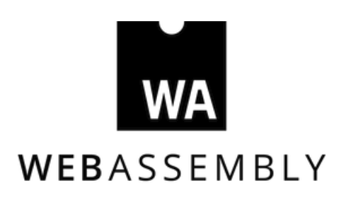

WASM 成为 HTML、CSS 与 JS 之后的第 4 门 Web 语言
大家都知道，万维网联盟 W3C 认证的 Web 语言有 HTML、CSS 与 JavaScript，而近日联盟正式宣布 WebAssembly 核心规范（WebAssembly Core Specification）成为官方 Web 标准，这意味着 WebAssembly 成为了第 4 种 Web 语言。
- WebAssembly 也叫 WASM，它是为基于栈的虚拟机设计的二进制指令格式，WASM 作为可移植目标，用于编译高级语言（如 C/C++/Rust），从而可以在 Web 上部署高性能客户端和服务器应用，同时它也可以在许多其它环境中使用。
- WebAssembly 描述了一种内存安全的沙箱执行环境，该环境甚至可以在现有 JavaScript 虚拟机内部实现。当嵌入到 Web 中时，WebAssembly 将强制执行浏览器的同源和权限安全策略。
- WASM 有多种实现，包括浏览器和独立系统，它可以用于视频和音频编解码器、图形和 3D、多媒体和游戏、密码计算或便携式语言实现等应用。目前 1.0 版本的 Wasm 已经支持 Chrome、Firefox、Safari 与 Edge 浏览器。
- 对于 Web 来说，因为其虚拟指令集设计，WebAssembly 可让加载的页面以本地编译代码运行，从而可以提高 Web 性能。换句话说，WebAssembly 可以实现接近本地的性能，并且优化加载时间，同时最重要的是，它可以作为现有代码库的编译目标。
- 尽管本地类型数量很少，但相对于 JavaScript 而言，性能的提高大部分归功于其对一致类型的使用。WebAssembly 对编译语言进行了数十年的优化，其字节代码针对紧凑性和流传输进行了优化。在下载其它代码时，网页便可以开始执行。网络和 API 访问通过附带的 JavaScript 库进行，安全模型则与 JavaScript 相同。
W3C 同时公布了 WASM 接下来的开发重点，新特性包括：
- Threading，线程：Threading 提供了共享内存多线程和原子内存访问的优势。
- Fixed-width SIMD，固定宽度 SIMD：并行执行循环的向量操作。
- Reference types 引用类型：允许 WebAssembly 代码直接引用宿主对象。
- Tail calls，尾调用：直接调用而不使用额外的堆栈空间。
- ECMAScript module integration，ECMAScript 模块集成：通过将 WebAssembly 可执行文件加载为 ES6 模块来与 JavaScript 进行交互。
- 此外还有一些一直在跟进的特性，包括垃圾回收、调试接口与 WebAssembly 系统接口（WASI）等。
值得一提的是，上个月 Mozilla、Fastly、Intel 与 Red Hat 宣布成立联合组织 Bytecode Alliance（字节码联盟），该联盟旨在通过协作实施标准和提出新标准，以完善 WebAssembly 在浏览器之外的生态。